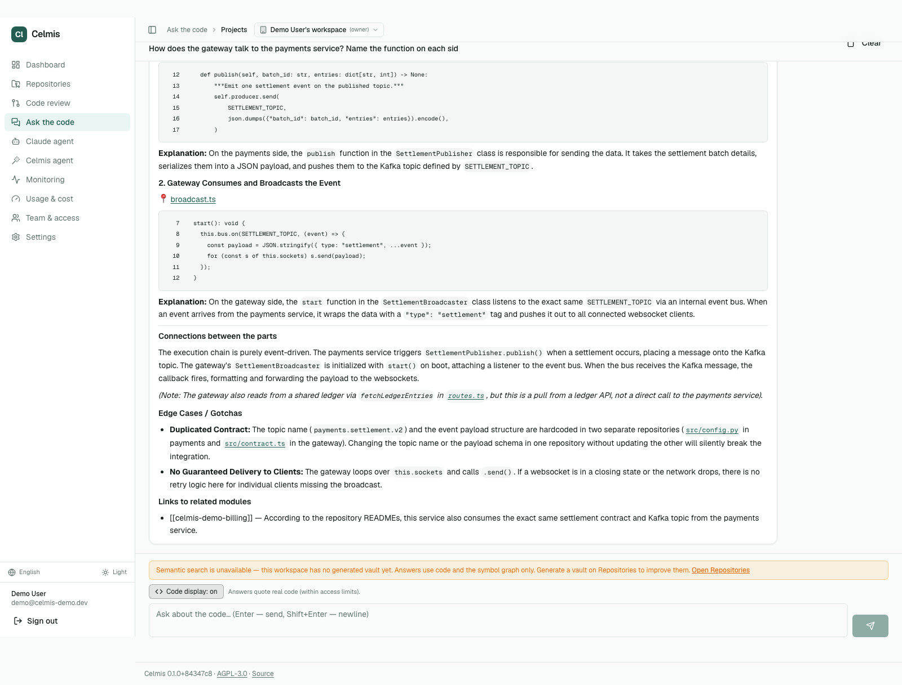
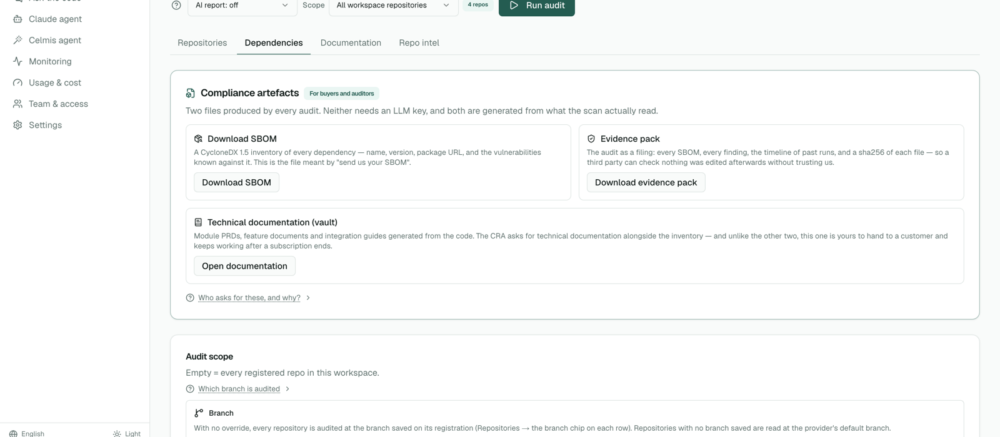
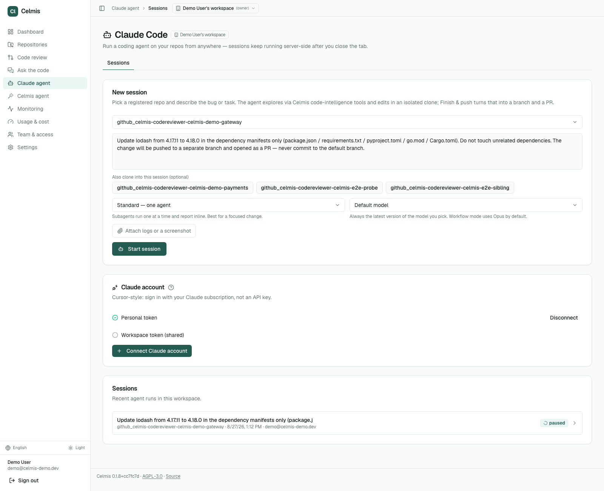
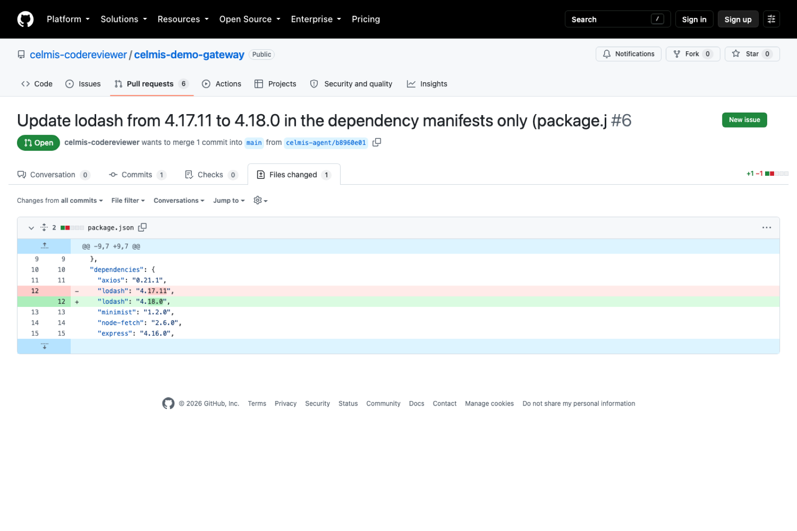
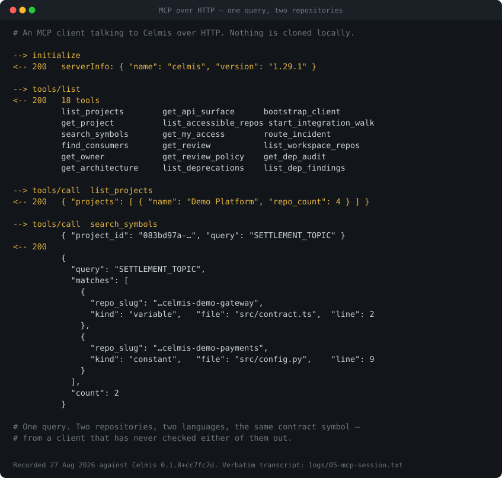
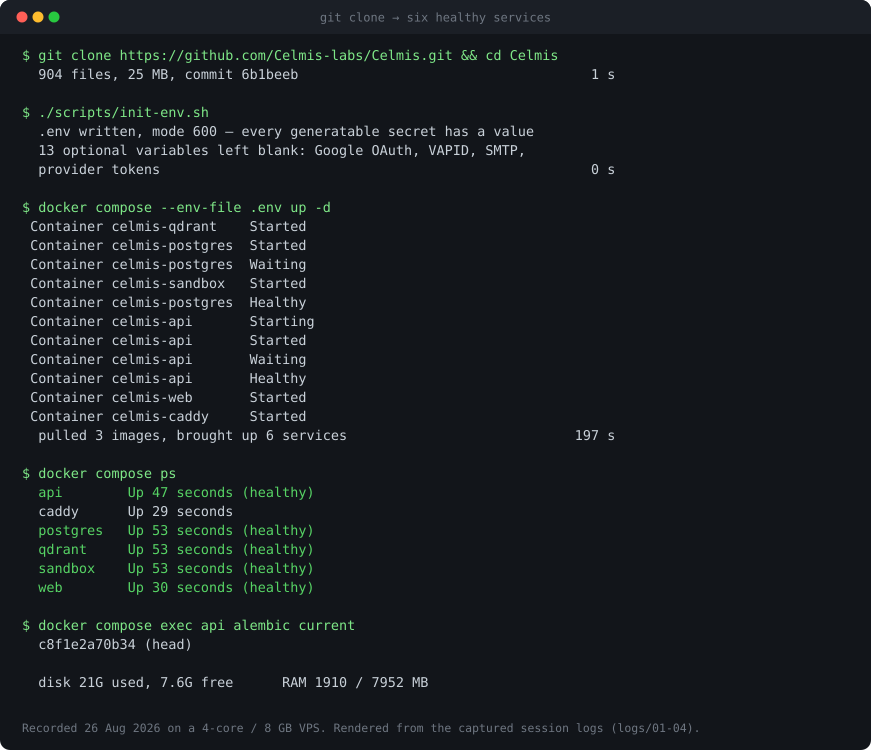

hover a node — its consumers light up
Celmis
Self-hosted code intelligence.
Ask your codebases, review pull requests, and produce the evidence an auditor asks for.
Celmis reads your repositories once and keeps a symbol graph of them —
everything else is a different way of reading that graph. It runs on one machine
under docker compose, with the model provider of your choice behind
it, and nothing leaves your network except the calls you configure.
In the oldest telling, Kelmis was the smelter — one of three who found how to work iron with fire. The index does the reducing here; the surfaces are what work the result.
What a diff-only tool cannot do
Ask a question that spans two repositories, and the answer quotes both
The gateway and the payments service are separate repositories with no shared code. The answer traces the call chain between them — then notices, unprompted, that the Kafka topic name is hardcoded in both, and that changing one silently breaks the other.
A reviewer that reads only the diff structurally cannot say that. It never had the other repository open.

Seven things people do with it
Index once, then read it from whichever side of the work you are standing on
Ask it. From any device, anywhere, without booking time from an engineer and without a meeting whose only output is a paragraph. ask the code
Every one of those pulls someone experienced out of flow, at the
moment they are already covering. The codebase answers instead, with
file:line citations.
ask the code
Load it, grant the right to ask, and deny the paths that must stay private. They get answers; the credentials are refused at the source. access rules
One button, CycloneDX, plus an evidence pack whose manifest lets them verify it without trusting you. dependencies and evidence
Fix with Claude hands an embedded session the repository, the package and the finding. It edits, the runner pushes a branch and opens a pull request. fix it from here
Agents read the diff — and, where the graph is built, who else calls what is being changed, including from another repository. pull-request review
Point it at /mcp/. Eighteen tools over the same index,
under the same access rules — no second copy of your code anywhere.
mcp
The first three are the ones a code-review tool does not do at all, and they are the reason this is a platform rather than a reviewer.
Three numbers
Including the one that does not flatter us
git clone to six
healthy services, measured on a clean serverThat last one is deliberately unflattering, and it stays. It measures one of the surfaces above — pull-request review on isolated single-repository pull requests — and that set has no sibling service for a symbol to have consumers in. The thing this product is built around is not in the number at all.
The table, an audit of every finding it scored false, and the command that reproduces both are in the repository. Of the 79 findings the benchmark counted against us, 33 turned out to be real defects the gold set was silent about.
The other surfaces
Same index, read four more ways




Quick start
Docker, a model key, and about four gigabytes of RAM
Postgres and Qdrant are bundled — there is no external cluster to provision, and no Python or Node.js install needed for the Docker flow. A free Gemini key is enough to evaluate.
# clone, then generate every secret in the format it needs git clone https://github.com/Celmis-labs/Celmis.git celmis cd celmis ./scripts/init-env.sh # first boot pulls three images and applies migrations docker compose --env-file .env up -d docker compose ps

- Bring your own modelGoogle Gemini, Anthropic, OpenAI, OpenRouter, Groq or Mistral — whichever you already pay for.
- Keys go in through the interfaceNot into a file you might commit, and not into an image you might push.
- Nothing phones homeThe only outbound calls are the ones you configure. No telemetry, no licence check.